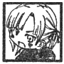
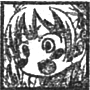

トップ / みつどもえ / キャラクター / メインキャラクター
［丸井みつば］ 漫画『みつどもえ』に登場するキャラクター
丸井みつば
コミックス紹介文
丸井みつば
ちょっとおませなサドガール。支配してないのに支配者気取り。
柱紹介文
丸井みつば①
ちょっとおませなサドガール!!
丸井みつば②
長女。ちょっとおませなサドガール。独裁者ぶるも独裁できず。
丸井みつば③
長女。よく食べるサドガール。時に三女から”雌豚”と呼ばれる。
丸井みつば④
長女。ちょっとぽちゃりなサドガール。いっつもムシャムシャ。
わりとどうでもいいキャラクターに関するメモ
９卵性以降前髪がぱっつん仕様なのは個人的に気に入ってしまったからです。すいません。
柱紹介文カット
| 元絵は1卵性「良い子悪い子恐ろしい子…!!」の６ページ目、腕組みをしながら男子に腰掛けているぶち抜き絵より。52卵性まで使用された初期バージョンである。注目したいのは、コミックス収録時に修正された瞳の描き方が、雑誌掲載時のべた塗りのままになっていることである。 | |
| 元絵はコミックス１巻の表紙より。初のオールカラー回である20卵性「僕はパンツに恋をする」で使用された１回限りのバージョン。 | |
 | 元絵は32卵性「マゾ・ド・ペンギン」の５ページ目、氷上ボーリングでふたばのお尻を指して「これよ！」と言っているコマより。52卵性～234卵性までの５年間に渡って使われていた。 |
 | 元絵は167卵性「ぽっかぽか～ん」の１ページ目、スーパー銭湯に来た際のぶち抜き絵より。別冊少年チャンピオンに移籍してからの235卵性以降、使われるようになった。 |
| 元絵はコミックス８巻の表紙より。オールカラー回である251卵性「私が主人公にならなかった頃の話をする」で使用された１回限りのバージョン。 |
上記に掲載した画像は資料としての必要性から『みつどもえ』『週刊少年チャンピオン』『別冊少年チャンピオン』（秋田書店）誌上より引用させていただいているものであり、全ての著作権は原権利者に属します。
登場エピソード
◎主役 〇準主役 ▲重要 △ちょい役
| 0009 | 話数 | サブタイトル | 収録 | 役回り | |
|---|---|---|---|---|---|
| 0010 | 1 | 「良い子悪い子恐ろしい子…!!」 | １巻 | ◎ | なんでもバスケットでふたばと椅子を取り合い流血。 |
| 0020 | 2 | 「丸井スパークリング正義」 | １巻 | ◎ | 矢部×栗山のロマンスのため、矢部の股間を狙う。 |
| 0030 | 3 | 「乳首券大人買い」 | １巻 | ▲ | 可愛さのあまりチクビをグシャッてしたい。 |
| 0040 | 4 | 「Hanamizuが止まらない」 | １巻 | ▲ | ふたばの鼻水まみれになった上に、投げ飛ばされる。 |
| 0050 | 5 | 「コードネームはたゆん 合言葉ははわわ」 | １巻 | ▲ | 保健室で栗山が起こした検尿パニックに巻き込まれる。 |
| 0060 | 6 | 「１／３の純情ないやがらせ」 | １巻 | ◎ | 矢部の悪口満載のラブレターをまき散らす。 |
| 0070 | 7 | 「11.３のひとは」 | １巻 | 冒頭、下校前の教室のコマ。 | |
| 0080 | 8 | 「ふたつのむねのふくらみは」 | １巻 | ▲ | 矢部のスケッチをしているが下手くそ。 |
| 0090 | 9 | 「シザーマンは思春期」 | １巻 | ◎ | 前髪がぱっつんに。ひとはの本を弁償させられる恥辱。 |
| 0110 | 11 | 「お父さんは心配性な不審者」 | １巻 | ◎ | パンツが盗まれる騒動で、矢部を犯人だと指摘する。 |
| 0120 | 12 | 「みつばと！」 | １巻 | ◎ | セミ捕りに来て木の枝にぶら下がったまま放置される。 |
| 0130 | 13 | 「チクビのたつ頃に」 | １巻 | 最後のコマ、ひとはのイメージ。 | |
| 0140 | 14 | 「ふたばの教室」 | １巻 | 〇 | ふたばに道着で作った筆入れを渡されるが…。 |
| 0150 | 15 | 「ないしょのみつば」 | １巻 | ◎ | ブラジャーを買いに来るが、赤っ恥をかく羽目に。 |
| 0170 | 17 | 「晴天航路」 | １巻 | 〇 | 騎馬戦で活躍するが、ひとはに帽子を全部奪われる。 |
| 0180 | 18 | 「パンツは友だち」 | １巻 | ▲ | 佐藤が自分の動物パンツを頭から被っているのを目撃。 |
| 0190 | 19 | 「白い恋人」 | １巻 | 〇 | パンツの件で佐藤を変態と罵る。 |
| 0200 | 20 | 「僕はパンツに恋をする」 | ２巻 | 〇 | チクビが自分のハムパンに夢中になりひとはを煽る。 |
| 0210 | 21 | 「ヒゲとボイン」 | ２巻 | 〇 | 授業参観でふたばの作文を読み上げる羽目に。 |
| 0230 | 23 | 「監獄ロック」 | ２巻 | ◎ | ひとはと共に体育倉庫に閉じ込められてしまう。 |
| 0250 | 25 | 「まかれますか まかれませんか」 | ２巻 | 〇 | 栗山に包帯の巻き方をレクチャー。 |
| 0260 | 26 | 「○本の住人」 | ２巻 | ふたばにクシャミを掛けられる。 | |
| 0280 | 28 | 「じゃじゃ馬シェイプ★UP」 | ２巻 | ◎ | みんなに太ったことを知られてダイエットを始める。 |
| 0290 | 29 | 「サンタがすぐうしろにやってくる」 | ２巻 | 〇 | ひとはサンタの正体がバレそうになり、助けに入る。 |
| 0300 | 30 | 「飛べない猪はただの猪」 | ２巻 | ◎ | 風に乗って飛んでいった猪パンツを追い掛ける。 |
| 0310 | 31 | 「やわらか霊柩車」 | ２巻 | 朝食の場面。 | |
| 0320 | 32 | 「マゾ・ド・ペンギン」 | ２巻 | 〇 | 凍ったプールで千葉たちと氷上ボーリング勝負。 |
| 0330 | 33 | 「無口な呪文は天然温泉」 | ２巻 | 〇 | 温泉に入りたいふたばのために一緒にドラム缶を運ぶ。 |
| 0340 | 34 | 「親指さがし」 | ２巻 | ▲ | ふたばの夕食の代わりにひとりでピザを頼む。 |
| 0350 | 35 | 「それでもパパはやってない」 | ２巻 | 草次郎のイメージと、冒頭の投稿の場面。 | |
| 0360 | 36 | 「マリア様がみてない」 | ２巻 | 〇 | 杉崎にライバル視され、弱点探しで隠し撮りされる。 |
| 0370 | 37 | 「スニーカーぶる～ん」 | ２巻 | ▲ | 足の裏を怪我したふたばにスニーカーをあげる。 |
| 0380 | 38 | 「お薬のおじかん」 | ２巻 | 〇 | 風邪を引いて休み、杉崎たちがお見舞いに来る。 |
| 0400 | 40 | 「明日、春本が来たら」 | ３巻 | △ | ふたばの下着モデルを務める佐藤を目撃。 |
| 0410 | 41 | 「いいなり！Iブレーション」 | ３巻 | ◎ | ダイエットのため杉崎の携帯を拝借し、盗難騒動に。 |
| 0420 | 42 | 「本域変態ガチレンジャー」 | ３巻 | △ | ガチレンを観ているという杉崎を馬鹿にする。 |
| 0430 | 43 | 「好き好き大好き」 | ３巻 | △ | 昔の草次郎の写真を見てイケメンだと言ってしまう。 |
| 0440 | 44 | 「低気圧ガール」 | ３巻 | ◎ | 普段と違う様子に杉崎と千葉が不審がる。 |
| 0450 | 45 | 「小生は加護女」 | ３巻 | △ | 迷子になったふたばを交番に迎えに行く。 |
| 0470 | 47 | 「どっち弾平」 | ３巻 | △ | 勢いよくドッジボールを投げるがしょぼい。 |
| 0480 | 48 | 「あっSAW」 | ３巻 | ◎ | 包帯で巻かれて失神。誘拐されたと思い脱出を図る。 |
| 0490 | 49 | 「姉がニャーと泣く日」 | ３巻 | 〇 | 傷心のひとはのためにふたばを猫代わりにする。 |
| 0510 | 51 | 「曖昧 何センチ？」 | ３巻 | ◎ | バストサイズを巡り杉崎とミクロの争いを繰り広げる。 |
| 0540 | 54 | 「パパとムスメの１時間」 | ３巻 | ◎ | 草次郎との関係を語ったら、吉岡が食いついてきた。 |
| 0560 | 56 | 「ふたばさん チェンジ！」 | ３巻 | 〇 | 自分のなりきりゴッコをするふたばと言い争い。 |
| 0570 | 57 | 「うばわれてオットセイ」 | ３巻 | 〇 | 水着の試着中、杉崎にパンツを持ち去られる。 |
| 0590 | 59 | 「判子の旅」 | ４巻 | 〇 | ラジオ体操でハンコを押せず丸井ブランド崩壊の危機。 |
| 0600 | 60 | 「無抵抗平ら系水泳部どうしよう」 | ４巻 | △ | 市営プールで会った杉崎に憎まれ口を叩く。 |
| 0610 | 61 | 「アレ、参上」 | ４巻 | ▲ | 三つ子と佐藤たちで夏祭りに。 |
| 0620 | 62 | 「年下のヒト」 | ４巻 | ◎ | ふれあい学習で出会った生意気な少年に手を焼く。 |
| 0630 | 63 | 「ブラリ途中下車の旅」 | ４巻 | ▲ | 千葉のブラホック外しを受ける資格がない。 |
| 0640 | 64 | 「花ざかりの男塾」 | ４巻 | △ | 冒頭のチクビを囲む場面。 |
| 0650 | 65 | 「たったひとつの変」 | ４巻 | 〇 | 変態王を目指す緒方に執拗に追い掛け回される。 |
| 0660 | 66 | 「痴女の奇妙な冒険」 | ４巻 | ◎ | １年生の女子に嘘を教えて、慕われるようになるが…。 |
| 0670 | 67 | 「ふしぎなベルト」 | ４巻 | ◎ | ひとはのガチベルトを破壊したと言い出せず。 |
| 0680 | 68 | 「わたしと姉とオバケたち」 | ４巻 | 杉崎のぴょんぴょんを引っ張っている。 | |
| 0690 | 69 | 「鉄鍋王女」 | ４巻 | ◎ | 調理実習中に指を切って血が止まらなくなる。 |
| 0700 | 70 | 「今日の６の３」 | ４巻 | △ | 杉崎と言い争い。盗撮されたと訴える。 |
| 0720 | 72 | 「私の頭の中に」 | ４巻 | 佐藤の斜め後ろの席に座っている。 | |
| 0730 | 73 | 「ぷるるんっ！ふーとキャンプ」 | ４巻 | ◎ | ひとはによるダイエット作戦のためふたばに煽られる。 |
| 0740 | 74 | 「ちぇんじ２」 | ４巻 | △ | 風邪を引いたふたばに腕を掴まれ気持ち悪がる。 |
| 0750 | 75 | 「マリア様がみえない」 | ４巻 | ◎ | 痴女の変態女王だと思って接してくる麻里奈に困惑。 |
| 0760 | 76 | 「サンタがそこかしこにやってくる」 | ４巻 | ▲ | サンタとして龍太の前に現れるが、パンツでバレる。 |
| 0770 | 77 | 「ＷＣ公共密室機構」 | ４巻 | ◎ | 大晦日、トイレを占有するがひとはに閉じ込められる。 |
| 0780 | 78 | 「そのとき おっぱいが動いた」 | ４巻 | △ | こたつの脇で腹筋中。 |
| 0790 | 79 | 「ゆきゆきて連合軍」 | ５巻 | 〇 | そうと知らず尿で汚染された雪玉をまき散らす。 |
| 0800 | 80 | 「モーニングコーヒーおかわり」 | ５巻 | ◎ | 冬の朝の出来事。服を温めるよう妹たちに命じるが…。 |
| 0810 | 81 | 「ご愁傷さま宮下さん」 | ５巻 | ▲ | 宮下にひとはの情報を売り渡し、デザートを要求。 |
| 0820 | 82 | 「長女とチョコレートぶるーす工場」 | ５巻 | ◎ | 杉崎からひとつだけもらった友チョコに思わず…。 |
| 0830 | 83 | 「さくらんぼしんどうローム」 | ５巻 | 〇 | バイブベルトを買ってもらうが、ふたばがそれに対抗。 |
| 0850 | 85 | 「さよなら鉄棒先生」 | ５巻 | ▲ | 千葉の補助で逆上がりに挑戦。秘技の方は不発。 |
| 0860 | 86 | 「魔女っ娘つくえちゃん」 | ５巻 | ◎ | 机の高さを調整しているうちに降りられなくなる。 |
| 0870 | 87 | 「彼女が死んじゃった？」 | ５巻 | ▲ | 杉崎への友チョコのお返しの話。 |
| 0880 | 88 | 「クンクンカトウ」 | ５巻 | △ | 落ちていた佐藤のマスクを踏む。 |
| 0890 | 89 | 「LIAR DAY GAME」 | ５巻 | ▲ | 疑心暗鬼になったひとはに、足の小指を攻撃される。 |
| 0900 | 90 | 「ゆれるおもい」 | ５巻 | ◎ | 身体測定で体重を隠そうとするも、栗山にバラされる。 |
| 0910 | 91 | 「12小節のラブソング」 | ５巻 | 〇 | ラブレターをもらって得意満面だが、その送り主は…。 |
| 0920 | 92 | 「バカとテストと召還乳」 | ５巻 | △ | ふたばの成績向上に失敗した佐藤を罵倒。 |
| 0930 | 93 | 「千の風になりたい」 | ５巻 | ◎ | 強風の日に杉崎とのパンツを見られたら負け対決。 |
| 0940 | 94 | 「ふくびきアンバランス」 | ５巻 | ◎ | ゲットした遊園地のチケットをひとはに譲るが…。 |
| 0950 | 95 | 「前略、机の下より」 | ５巻 | △ | ひとは(実は宮下)に黒板を消されたことにクレーム。 |
| 0960 | 96 | 「あなたの知らない戦い」 | ５巻 | △ | ひとはは写真写りが悪いと指摘。 |
| 0970 | 97 | 「おやこくらぶ」 | ５巻 | ◎ | 草次郎に携帯を買ってもらおうとおねだり。 |
| 0980 | 98 | 「ママと小学６年生」 | ６巻 | ▲ | 憂鬱な授業参観。教室潜入中の麻里奈に腰掛ける。 |
| 0990 | 99 | 「べっとべっとさん」 | ６巻 | 〇 | 悪夢を見たひとはと、ベッドの位置を巡って争う。 |
| 1000 | 100 | 「100卵性の福音」 | ６巻 | 〇 | 人間カーリング対決において不動のストーンとなる。 |
| 1010 | 101 | 「ファットスティック・フォー 銀河の危機」 | ６巻 | ◎ | 水着のお尻に穴が空いてしまう大ピンチ。 |
| 1020 | 102 | 「跪くまで５時間だけ」 | ６巻 | ◎ | 水泳大会を中止させたいひとはに奉仕させる。 |
| 1030 | 103 | 「小生になっちゃったら」 | ６巻 | △ | 眉毛が再生し始めた吉岡を見て爆笑。 |
| 1040 | 104 | 「ガールズスプリンクラー」 | ６巻 | ◎ | 暑さのあまりだんだんおかしくなっていく。 |
| 1050 | 105 | 「夏のわたし」 | ６巻 | ▲ | 食糧自給しろとザリガニ釣りに駆り出される。 |
| 1060 | 106 | 「きせかえふたちゃん」 | ６巻 | ▲ | ふたばのちょんまげとのピンポン対決で敗北。 |
| 1070 | 107 | 「変と水着とサバイバル」 | ６巻 | ▲ | 水中から助けを求めてきたひとはの形相にビビる。 |
| 1080 | 108 | 「うつるんです」 | ６巻 | 〇 | 杉崎のＰＣを松岡に供養させようとする。 |
| 1090 | 109 | 「ねくろマネすく」 | ６巻 | 〇 | 避難訓練で矢部におんぶされて運ばれる。 |
| 1110 | 111 | 「同じ空の下の上」 | ６巻 | ▲ | リレーでひとはと杉崎の間。遅くて追い抜かれる。 |
| 1120 | 112 | 「同じ空の下の下」 | ６巻 | ▲ | ひとはが親子二人三脚を嫌がっているのを見破る。 |
| 1130 | 113 | 「みつばFly high」 | ６巻 | ◎ | 杉崎家でルームランナーを壊しそうになるが…。 |
| 1140 | 114 | 「小生トばしすぎ」 | ６巻 | ◎ | ふたばと少女漫画を描いて賞金ゲットを目論む。 |
| 1150 | 115 | 「のろのろ」 | ６巻 | △ | 松岡が作った呪いのぬいぐるみをいたぶる。 |
| 1160 | 116 | 「賭博主婦録 買い時」 | ７巻 | 〇 | 焼き芋のおまけゲットを狙うも、屁意のため失敗。 |
| 1170 | 117 | 「しゅびキャラ！」 | ７巻 | △ | バスケチームのイメージキャラクター決めの件。 |
| 1180 | 118 | 「アズサＧＫ５」 | ７巻 | ▲ | ひとはが行こうとしているサイン会の練習台に。 |
| 1190 | 119 | 「ぐるぐる」 | ７巻 | ◎ | 回らない寿司を知らない女。杉崎と回転寿司に。 |
| 1200 | 120 | 「スィミン不足」 | ７巻 | ▲ | ベッドのポジションを巡ってひとはと争う。 |
| 1220 | 122 | 「１／３の純情なロマンチカ」 | ７巻 | 杉崎のぴょんぴょんを引っ張っている。 | |
| 1230 | 123 | 「極楽コタツホッケー部」 | ７巻 | ◎ | スイーツを食べたいが杉崎に嫌がらせされる。 |
| 1240 | 124 | 「サンタが息を殺してやってくる」 | ７巻 | ▲ | パンイチになった矢部サンタをコタツに匿う。 |
| 1250 | 125 | 「初春を君に捧ぐ」 | ７巻 | ◎ | はぎ取ってしまった杉崎の帯を服の下に隠すが…。 |
| 1260 | 126 | 「ひぎはねっ！」 | ７巻 | ◎ | 書き初め中に千葉の視線が気になり、やがて尻相撲に。 |
| 1270 | 127 | 「だまりスケッチ」 | ７巻 | △ | 矢部の代わりに現れた海江田の噂話をしている。 |
| 1280 | 128 | 「鬼菓子間」 | ７巻 | ◎ | 豆まきでひとはに納豆のトラップを仕掛けられる。 |
| 1290 | 129 | 「むぐぅ」 | ７巻 | 〇 | ひとはのタイ焼きもひとりで食べてしまい恨まれる。 |
| 1300 | 130 | 「バレンタイン・ギスギス」 | ７巻 | △ | 矢部へのチョコをひとはに託した件について。 |
| 1310 | 131 | 「もももも吐息」 | ７巻 | ▲ | こぼしてしまったお酒の件で慌てる麻里奈を不審がる。 |
| 1330 | 133 | 「燃焼ボール」 | ７巻 | ◎ | 杉崎にバランスボールをもらうが、壊してしまう。 |
| 1340 | 134 | 「見開け！心の扉」 | ７巻 | ◎ | 杉崎家にお泊まり。必死で眠気に耐える。 |
| 1350 | 135 | 「Pinkな遺伝子」 | ８巻 | △ | 保護者懇談会の前、杉崎との会話。 |
| 1360 | 136 | 「なまなましいの」 | ８巻 | ◎ | NAMAの新刊の内容を吉岡たちに演じさせる。 |
| 1380 | 138 | 「おにいちゃんと一緒」 | ８巻 | ▲ | 学校の前で張り込んでいた一郎太の奇行にドン引き。 |
| 1390 | 139 | 「ハルカン！」 | ８巻 | ▲ | 缶蹴り。宮下と共にひとはたちの様子を影から窺う。 |
| 1400 | 140 | 「ぼっちさん」 | ８巻 | ◎ | 携帯を壊した件で杉崎との間でトラブルに。 |
| 1410 | 141 | 「とぶくすりー」 | ８巻 | ▲ | 跳び箱を跳べないひとはのために、馬跳びの馬に。 |
| 1420 | 142 | 「吉岡さんちのガーゴイル」 | ８巻 | 〇 | 初めての吉岡家訪問。紗江子を挑発して出禁になる。 |
| 1430 | 143 | 「あねと無知」 | ８巻 | 〇 | 姉交換により龍太が泊まりに来る。 |
| 1440 | 144 | 「彼方からの手紙」 | ８巻 | 〇 | 胸キュンハッピー大作戦でイチャモンをつける親分役。 |
| 1450 | 145 | 「佐藤家の食卓」 | ８巻 | ▲ | 父離れできないふたばと佐藤家にお泊まりに。 |
| 1460 | 146 | 「巻きタオルはどこの森」 | ８巻 | ◎ | 無理に着替えようとした結果、頭を痛打して失神。 |
| 1470 | 147 | 「仁義とかいろいろない戦い」 | ８巻 | △ | 緒方のゴムが伸びたパンツ＝太るしか。 |
| 1480 | 148 | 「傘もない」 | ８巻 | 〇 | お気に入りの傘をアピールしていたが、折ってしまう。 |
| 1490 | 149 | 「ふわとろ時間」 | ８巻 | △ | プールの時期、ひとはがうっとうしいと話す。 |
| 1500 | 150 | 「突撃！晩ごはん」 | ８巻 | ◎ | 流しそうめんと間違えてチクビを食べそうに。 |
| 1510 | 151 | 「水の中のナイト」 | ８巻 | ▲ | 市営プールにて。麻里奈を見たい男からすると、邪魔。 |
| 1520 | 152 | 「祖母とＴシャツと私」 | ８巻 | ◎ | 丸井家に来たおばあちゃんにあれこれ気を遣う。 |
| 1530 | 153 | 「動物のイタコさん」 | ８巻 | ▲ | モノマネ大会で海の幸狙いを主張。 |
| 1540 | 154 | 「太陽と地味な教室」 | ９巻 | 〇 | ふたばの足の裏を鍛える特訓に付き合う。 |
| 1550 | 155 | 「姉は一級建築士」 | ９巻 | ◎ | アイスの棒で造った家の模型の中に当たりがあり…。 |
| 1560 | 156 | 「サブウェイ１２３４」 | ９巻 | △ | 吉岡が語る愛のオーラについて聞いている。 |
| 1570 | 157 | 「妄想少女肉食系」 | ９巻 | ▲ | 矢部(の背後に隠れた海江田)に態度を注意される。 |
| 1580 | 158 | 「視界に一つだけの頭」 | ９巻 | 冒頭の宮下がＫＹな発言をするコマ。 | |
| 1590 | 159 | 「メビウストリッパー」 | ９巻 | ◎ | 栗山が話している眼鏡の件をブラのことだと勘違い。 |
| 1600 | 160 | 「かもはし通信」 | ９巻 | 〇 | 壁新聞班でエロ本を捨てる犯人を捕らえることを提案。 |
| 1610 | 161 | 「神様、もう一冊だけ」 | ９巻 | 冒頭と最後のコマ。 | |
| 1620 | 162 | 「メイキャスパー」 | ９巻 | ◎ | ハロウィンパーティに向けて怖い仮装を準備。 |
| 1630 | 163 | 「へ～んしん!!～ひとはバーディーラッシュ」 | ９巻 | ▲ | ゴルフの真似事をしてたんこぶ２つこしらえる。 |
| 1640 | 164 | 「俺の妹がこんなに可愛いのはなぜ」 | ９巻 | △ | 冒頭の交番前での緒方とのやり取り。 |
| 1650 | 165 | 「クッキンアイドル アイ！マイ！見舞い」 | ９巻 | ▲ | 麻里奈のお見舞いに来て高級食材を物色。 |
| 1660 | 166 | 「情愛小説家」 | ９巻 | △ | 冒頭の純次の職業に関するやり取り。 |
| 1670 | 167 | 「ぽっかぽか～ん」 | ９巻 | ◎ | 銭湯にでお尻に写ったタヌキの絵を隠そうと悪戦苦闘。 |
| 1680 | 168 | 「ぼっこぼこ」 | ９巻 | 矢部のイメージと最後のコマ。 | |
| 1690 | 169 | 「サンタが廻ってやってくる」 | ９巻 | 杉崎家のクリスマスパーティに来ている。 | |
| 1700 | 170 | 「アレキャン」 | ９巻 | 〇 | 杉崎に代わって写真モデルの話を受けようとするが…。 |
| 1710 | 171 | 「銀盤カレイドズコー」 | ９巻 | ▲ | ふたばがスケートを滑れないことを知って笑う。 |
| 1720 | 172 | 「神の三十路るセカイ」 | ９巻 | △ | 海江田と宇宙人雑誌の編集長の面会に立ち会う。 |
| 1730 | 173 | 「一緒にトレーニング」 | １０巻 | ◎ | ジョギングの途中、ガチの不審者に追われる羽目に。 |
| 1740 | 174 | 「コックリオン」 | １０巻 | ▲ | お札でコックリさん。杉崎の顔を足蹴にする。 |
| 1750 | 175 | 「間接フレーズ」 | １０巻 | ▲ | バレンタインの伝言ゲームで、千葉サイドの一番手。 |
| 1760 | 176 | 「にっとっと」 | １０巻 | ◎ | 毛糸のパンツを自慢しようと杉崎家に向かうが…。 |
| 1780 | 178 | 「ギヌロ革命!!」 | １０巻 | ▲ | ひとはにバレーのレクチャーをする。 |
| 1790 | 179 | 「スピーチスター」 | １０巻 | △ | 匂いでパンツが分かると力説する佐藤をボコる。 |
| 1800 | 180 | 「ホワイトデーアルバム」 | １０巻 | ▲ | 龍太相手にひとはの代わりに敵役を演じる。 |
| 1810 | 181 | 「わっしょい！みつマニア」 | １０巻 | ◎ | 自分もよいしょされたくて、ふたばに吉岡役を命じる。 |
| 1820 | 182 | 「ENGEL VOICE」 | １０巻 | ▲ | カラオケ大会に参加するが杉崎の罠が発動する。 |
| 1830 | 183 | 「スプリングウーマン」 | １０巻 | △ | 男女のバスケ対決で役立たずな宮下に怒り。 |
| 1840 | 184 | 「すくすく育て」 | １０巻 | △ | 杉崎とひとはの壁騒動に立ち会う。 |
| 1850 | 185 | 「スーパーミラクル☆トレイン」 | １０巻 | 〇 | 一家でお出かけ。痴漢っぽいおじさんを痴漢扱いする。 |
| 1870 | 187 | 「THE・２名様」 | １０巻 | 〇 | バーガー屋で佐藤と相席に。話題はやはりパンツ。 |
| 1880 | 188 | 「カラブルＤＡＹＳ」 | １０巻 | ▲ | 佐藤を助けたいふたばの頼みでスカートと靴下を貸す。 |
| 1890 | 189 | 「三女さんはいつも寝不足」 | １０巻 | △ | 痴漢撲滅ポスターを描く。構図だけは三つ子で同じ。 |
| 1900 | 190 | 「和実の日々」 | １０巻 | ▲ | 糖類もとい盗塁をして、千葉の手首を負傷させる。 |
| 1910 | 191 | 「リアルかくれんぼ」 | １０巻 | ◎ | 血液を狙うSSS隊から佐藤を守るろうとする。 |
| 1920 | 192 | 「ふらっガール」 | １１巻 | △ | ひとりだけ宮下に抱きつかれない。 |
| 1930 | 193 | 「氷の自嘲」 | １１巻 | 〇 | 杉崎が徹夜で作った氷の彫像を容赦なく破壊。 |
| 1940 | 194 | 「脂肪遊戯」 | １１巻 | ◎ | ひとはたちのチクビの話を自分のことだと勘違い。 |
| 1950 | 195 | 「墓地を見おろす黒い家」 | １１巻 | △ | 家出してきた松岡の話にドン引き。 |
| 1960 | 196 | 「夏の日の2010」 | １１巻 | ▲ | 朝から脂肪を巡って姉妹げんか。 |
| 1980 | 198 | 「胸当てを揺らす手」 | １１巻 | ◎ | 松岡に胸囲を測ってもらい、一緒にブラを買いに。 |
| 1990 | 199 | 「おもひでおろおろ」 | １１巻 | ▲ | 龍太をあやすガチレンゴッコで、人質役→ヒーローに。 |
| 2000 | 200 | 「帰路の旅」 | １１巻 | ▲ | ブチッという音に思わず自分が原因ではと確かめる。 |
| 2010 | 201 | 「はじめてのあばんチュウる」 | １１巻 | △ | 宮下が死んだと泣く杉崎を慰めている。 |
| 2030 | 203 | 「ナマコちゃん絵日記」 | １１巻 | ▲ | ひとはたちに純次のサインをもらいに行かせる。 |
| 2040 | 204 | 「神様、もう数センチだけ」 | １１巻 | ▲ | 胸から出ている管を見て杉崎が重病ではと心配する。 |
| 2050 | 205 | 「青空Ｌ」 | １１巻 | ◎ | 三人四脚で佐藤と緒方の間という地獄ポジ。 |
| 2060 | 206 | 「ほんとにあった！霊媒小生」 | １１巻 | ▲ | ふたばと松岡の怪談を巡るやり取りに立ち会う。 |
| 2070 | 207 | 「裏切りはあたしの名前を知っている」 | １１巻 | △ | 壁新聞の作成中、猫の名前の話に。 |
| 2080 | 208 | 「死刑台のヘルスメーター」 | １１巻 | ◎ | 栗山たちがあの手この手で体重計に乗せようと試みる。 |
| 2090 | 209 | 「けいしょう！」 | １１巻 | ▲ | 秘技・帽子めくりによって、帽子がお尻に挟まる。 |
| 2100 | 210 | 「汗が降り注ぐ丘」 | １１巻 | ▲ | 汗の件がマラソン遅い組の議題に。 |
| 2110 | 211 | 「親切な海江田さん」 | １１巻 | ▲ | 友人の結婚式後ですさむ海江田をさらに煽る。 |
| 2120 | 212 | 「混入ＤＡＹＳ」 | １２巻 | ◎ | 調理実習。止めどない緒方の鼻血を手で受け止める。 |
| 2130 | 213 | 「食卓のお肉が来るまで」 | １２巻 | ◎ | 闇鍋と知らずにやって来た鍋パーティ。 |
| 2160 | 216 | 「なんと双六」 | １２巻 | ▲ | 寝正月している間にパンツ双六が開催されていた。 |
| 2170 | 217 | 「冬のファンタＧ」 | １２巻 | △ | ひとはの様子がおかしいのを訝しむ。 |
| 2180 | 218 | 「ダウジングヒーロー」 | １２巻 | 〇 | 杉崎が落とした財布を見つけるが、中身がなく…。 |
| 2200 | 220 | 「飼い猫オーブーラン」 | １２巻 | ◎ | 懐のチブサの声で、男子たちをキュンキュンさせる。 |
| 2210 | 221 | 「ミュージックアザーズ」 | １２巻 | 給食のシーン。心霊テープも意に介さず。 | |
| 2220 | 222 | 「ふたばのアトリエ」 | １２巻 | △ | 佐藤が好みのおっぱい。 |
| 2230 | 223 | 「ケータイが鳴らなくて」 | １２巻 | ▲ | 杉崎にパンツを撮られ、吉岡に転送される。 |
| 2240 | 224 | 「正解はひとつ！じゃないんだからねっ!!」 | １２巻 | △ | 交番に草次郎を迎えに来る。 |
| 2250 | 225 | 「みつばナンバーワン!!」 | １２巻 | 〇 | 杉崎が撮った顔写真の写りの良さが評判に。 |
| 2260 | 226 | 「桜の木になる」 | １２巻 | ◎ | お花見。ご馳走に加え、ひとはのお弁当も平らげる。 |
| 2270 | 227 | 「魔法少女なんとかカントカ」 | １２巻 | △ | ひとはの魔法ゴッコを見て腹を抱えて笑う。 |
| 2280 | 228 | 「先生への楽しい謝り方」 | １２巻 | 〇 | 矢部に謝る係を決める土下座オーディションを審査。 |
| 2290 | 229 | 「寄せ書き教室」 | １２巻 | △ | 倒れているひとはを見て、本体に寄せ書きを書く。 |
| 2300 | 230 | 「ハイスコアボーイ」 | １２巻 | ▲ | モンスター役で駆り出され、緒方にホウキで叩かれる。 |
| 2320 | 232 | 「うちの子ルンパ」 | １２巻 | 〇 | 杉崎家からルンパをもらってくる。 |
| 2330 | 233 | 「瞳をあけて」 | １３巻 | ▲ | ひとはが水中で目を開けられるよう、作戦を考える。 |
| 2340 | 234 | 「胸を描くよ」 | １３巻 | △ | ひとはが杉崎のおっぱいを触っているのを目撃。 |
| 2350 | 235 | 「ハムナブタラ／純白のピラミッド」 | １３巻 | ◎ | 運動会での千葉たちの企みを聞き、対策を考える。 |
| 2360 | 236 | 「最終実況計画」 | １３巻 | ▲ | ピラミッドでトップレス扱いされて騒ぎに。 |
| 2370 | 237 | 「ナイトメアー・ビフォア・アナザー」 | １３巻 | ▲ | 松岡の退院祝いのサプライズに参加。 |
| 2380 | 238 | 「ゴーストバストアーズ」 | １３巻 | ▲ | 透明人間になったら脱ぐでしょと言って痴女呼ばわり。 |
| 2390 | 239 | 「サンタが息巻いてやってくる」 | １３巻 | ▲ | クリスマスに襲来した海江田からふたばを守る。 |
| 2400 | 240 | 「ジュエルベッド」 | １３巻 | 〇 | ぬいぐるみに潜むひとはに気付き、いたぶろうとする。 |
| 2410 | 241 | 「愛する人の名前を一気に」 | １３巻 | △ | ひとはのチクビ(のぬいぐるみ)を引っ張る。 |
| 2420 | 242 | 「シュガー＆レス」 | １３巻 | ▲ | 千葉に秘技を掛けられ喉のつかえが取れる。 |
| 2430 | 243 | 「チョコレート霊魂」 | １３巻 | ▲ | 松岡のチョコの試食係。クレヨン食べたことありそう。 |
| 2440 | 244 | 「風邪のシレン」 | １３巻 | ◎ | 風邪でお休み。妹ふたりよりはまともな状態。 |
| 2460 | 246 | 「ありがとう！おともだちたち。」 | １３巻 | ▲ | 杉崎の絵本の事情を聞いて、みんなを召集する。 |
| 2470 | 247 | 「ココロコンタクト」 | １３巻 | 〇 | 栗山にもらった眼鏡でイタズラする。 |
| 2480 | 248 | 「黒子のゴールマン」 | １３巻 | △ | ゴールマンのひとはにボールキャッチさせる件。 |
| 2490 | 249 | 「レイコンボールＺ」 | １３巻 | ▲ | カバン持ち勝負の言い出っぺだが、自分が負ける。 |
| 2500 | 250 | 「あの頃の俺はもういない？」 | １３巻 | ▲ | SSS隊なりきりでの絵理追跡で伊藤役。途中で脱落。 |
| 2510 | 251 | 「私が主人公にならなかった頃の話をする」 | １４巻 | ◎ | 学芸会の主役の座を狙う。人魚姫を演じるが痴女。 |
| 2520 | 252 | 「仮契約の白雪姫」 | １４巻 | ▲ | 白雪姫にすり替わり、伊藤の毒リンゴを食べてしまう。 |
| 2530 | 253 | 「ＴＳ創作秘話」 | １４巻 | 〇 | ふたばプロダクションの担当編集に。 |
| 2540 | 254 | 「やはりあたしの青春ラブコメはまちがっている。」 | １４巻 | △ | 宮下にデリカシーないと言われてしまう。 |
| 2550 | 255 | 「Free!×3」 | １４巻 | ◎ | プールで水着のパンツを脱いでノーパン痴女に。 |
| 2570 | 257 | 「吉岡さんの家庭の事情」 | １４巻 | 〇 | 着ぐるみに潜んで吉岡家に忍び込むが汗だくに。 |
| 2580 | 258 | 「賭博輪投録 買い時」 | １４巻 | △ | 輪投げの景品欲しさに必死なひとはに笑いをこらえる。 |
| 2600 | 260 | 「ペアレンツの肖像」 | １４巻 | △ | 授業参観なのに一向に現れない草次郎に立腹。 |
| 2610 | 261 | 「死にぞこないの白」 | １４巻 | ▲ | 佐藤の悪評を払拭したい加藤に頼みごとをされる。 |
| 2630 | 263 | 「サンタが涅槃からやってくる」 | １４巻 | ▲ | ブラサンが草次郎だとバレそうになり、外に叩き出す。 |
| 2640 | 264 | 「ゲッチュー魔ごころ便」 | １４巻 | ▲ | 通知票を覗き見ようとして宮下に拒絶される。 |
| 2650 | 265 | 「ムチムチＢＵＲＳＴ」 | １４巻 | ◎ | 帯を使った千葉の秘技対策の特訓をすることに。 |
| 2660 | 266 | 「私とツイスターの1時間」 | １４巻 | ▲ | 人間ツイスターの下に潜む佐藤を踏みつける。 |
| 2670 | 267 | 「少女革命ウザナ」 | １４巻 | △ | 海江田の指示で宮下が回収したチョコを食べる係。 |
| 2680 | 268 | 「偉大なる湯たんぽ」 | １４巻 | ▲ | 麻里奈が実物大の湯たんぽを作る。 |
| 2690 | 269 | 「私は友達が少ない」 | １４巻 | △ | 冒頭のサイン帳のくだり。あんこをこぼす。 |
| 2700 | 270 | 「クッキー ストッカー」 | １５巻 | ▲ | こたつの中で佐藤にパンツを脱がされぶん殴る。 |
| 2710 | 271 | 「ハンモックゲーム」 | １５巻 | ◎ | ハンモックを独占しようとするも、グルグル巻きに。 |
| 2720 | 272 | 「となりの関取」 | １５巻 | ◎ | 席替えで誰も近くに座りたがらない。 |
| 2750 | 275 | 「ゴーストライダーズ」 | １５巻 | △ | 冒頭のナマコちゃんＣＭの場面。 |
| 2760 | 276 | 「暗闇のドッキリ」 | １５巻 | △ | 草次郎の似顔絵は想像を絶する怖さだった。 |
| 2770 | 277 | 「浮かないふたり」 | １５巻 | △ | プールで鼻血を出したと思って佐藤をボコる。 |
| 2780 | 278 | 「うけるひと」 | １５巻 | 〇 | 水に浮きたいふたばがライフスタイルを見習うように。 |
| 2790 | 279 | 「戦慄怪奇ファイルコワすぎ！」 | １５巻 | △ | 吉岡・松岡主催の肝試しにお化け役で参加。 |
| 2800 | 280 | 「キンギョ警報」 | １５巻 | ◎ | 金魚の行き先を探して、ひとり夜の街をさまよう。 |
| 2810 | 281 | 「Everyday、加齢者」 | １５巻 | △ | 海江田が中学生時の話を聞く。 |
| 2820 | 282 | 「渾沌のグルメ」 | １５巻 | 最後のコマ。呪文を唱えるひとはに引く。 | |
| 2830 | 283 | 「淋しい淡水魚」 | １５巻 | ▲ | 金魚の親権を主張する緒方に自分のものだと譲らない。 |
| 2840 | 284 | 「魔女の直送便」 | １５巻 | △ | ひとはが用意したハロウィンのお菓子を食べ尽くす。 |
| 2850 | 285 | 「みつばニュースの天才」 | １６巻 | ▲ | 麻里奈が用意したパンツに文字通り釣られる。 |
| 2860 | 286 | 「じょしりょく」 | １６巻 | △ | 宮下の女子力不足問題について。 |
| 2870 | 287 | 「サンタがどこからもやってこない」 | １６巻 | △ | ふたばと緒方によるサンタ談話に聞き耳を立てる。 |
| 2890 | 289 | 「恋のテレフォンCALL」 | １６巻 | △ | お菓子を食べる途中でで寝入って転がっている。 |
| 2900 | 290 | 「埼玉の小学生とひとの日記」 | １６巻 | ▲ | 念願の携帯をゲット。いざ手に入れると興味が薄れる。 |
| 2910 | 291 | 「ギリチョコ!!」 | １６巻 | ▲ | 佐藤の服で男装して海江田のチョコをゲット。 |
| 2920 | 292 | 「それでもやっぱり猫が好き」 | １６巻 | △ | チブサのパンツハンモックは、ゴムが緩すぎる。 |
| 2930 | 293 | 「おニュー・シネマ・パラダイス」 | １６巻 | △ | 映画館に来てポップコーンだけ食べて帰る。 |
| 2940 | 294 | 「オーマイゴースト？ ～わたしが規格になっても～」 | １６巻 | ▲ | ひとはとの仲直り工作を頼まれるが、内容を誤解。 |
| 2950 | 295 | 「チームＴ推し」 | １６巻 | ▲ | 児童会選挙への立候補を訴える。 |
| 2960 | 296 | 「後ろ足引っ張り隊」 | １６巻 | ▲ | ふたばに他の候補者の足を引っ張るように指示する。 |
| 2970 | 297 | 「はじめてのあくしゅ」 | １６巻 | ◎ | 自分に投票した男子をあぶり出すため、握手会を開催。 |
| 2980 | 298 | 「雌ブタがプロデュース」 | １６巻 | ◎ | 落選で落ち込む佐藤のプロデュースを申し出る。 |
| 3000 | 300 | 「完熟なる飼育」 | １６巻 | ▲ | 海江田のペット探しに付き合う。 |
| 3010 | 301 | 「水着にまとわりつくエトセトラ」 | １７巻 | 〇 | 吉岡家と初めての海水浴場に。痴女水着を着てくる。 |
| 3020 | 302 | 「夏の日の2015」 | １７巻 | △ | 日焼けした顔を隠すため、サメの頭部を被せられる。 |
| 3030 | 303 | 「いけちゃんとわたし」 | １７巻 | 〇 | 金魚の様子を見に佐藤家を訪問。池を造るよう提案。 |
| 3040 | 304 | 「恋の男子サイド」 | １７巻 | △ | 海江田のチアダンスに引く。 |
| 3050 | 305 | 「背筋をもさっと…」 | １７巻 | △ | チアダンスの最前列。 |
| 3060 | 306 | 「仮装ディストピア」 | １７巻 | △ | 仮装コンテストの会場に仮装(天使)して来ている。 |
| 3070 | 307 | 「Ｓ機関情報」 | １７巻 | △ | 佐藤にSSS隊がひとり増えていたことを伝える。 |
| 3080 | 308 | 「マツダケＡＲＴ」 | １７巻 | △ | 杉崎の飛び出る乳首にビビる。 |
| 3090 | 309 | 「湯けむりスナイバァ」 | １７巻 | ▲ | スーパー銭湯に。脱衣場で海江田のブラを見つける。 |
| 3110 | 311 | 「サンタが海の向こうからやってくる」 | １７巻 | ◎ | 和実に連れられ佐藤家の大人女子会に参加。 |
| 3130 | 313 | 「教師ビンゴビンゴ物語」 | １７巻 | ▲ | 海江田による落書き犯探しで真っ先に連行される。 |
| 3140 | 314 | 「バレンタイン？なにそれ？美味しいの？」 | １７巻 | 〇 | チョコ禁止の抗議に行くが、小金井の話に乗せられる。 |
| 3150 | 315 | 「猫なんかよんでもおきない」 | １７巻 | おまるに跨がるふたばを見て唖然。 | |
| 3170 | 317 | 「ルンパルーム」 | １８巻 | △ | ルンパの教育方針を巡って杉崎に反発。 |
| 3180 | 318 | 「桜Knightフィーバー」 | １８巻 | 三つ子＆佐藤でお花見に来ている。 | |
| 3190 | 319 | 「パンプロ」 | １８巻 | ◎ | 麻里奈の提案でパンツをプロデュースすることに。 |
| 3200 | 320 | 「ねことおはな」 | １８巻 | ▲ | 猫アレルギー克服したいと話す海江田を家に誘う。 |
| 3210 | 321 | 「いいひとは」 | １８巻 | ▲ | クラスメイトの評価基準は明るいか暗いか。 |
| 3230 | 323 | 「長靴をはいたトコ」 | １８巻 | △ | 冒頭のふたばとの長靴のやり取り。 |
| 3240 | 324 | 「ブレア・ウォッチ・プロジェクト」 | １８巻 | 〇 | キャンプの就寝中、杉崎が額に落書きしようと目論む。 |
| 3260 | 326 | 「パラサイト・イブ」 | １８巻 | ◎ | 金魚と泳ぐため、緒方に金魚の魂を一体化させる。 |
| 3270 | 327 | 「おおきくしてかぶって」 | １８巻 | △ | 男子の防災頭巾の柄に見覚えがある。 |
| 3280 | 328 | 「あなたの100の嫌いなもの」 | １８巻 | ◎ | 嫌いな食べ物がクラス内外の話題に。 |
| 3290 | 329 | 「ナイトメアー・ビフォアアフター」 | １８巻 | 〇 | 海江田をハロウィンパーティーに誘いときめかせる。 |
| 3310 | 331 | 「賭博愛情録 買い時」 | １８巻 | △ | 焼きイモ屋の親父が街を離れることを話す。 |
| 3320 | 332 | 「フリーマーケットダンジョン」 | １８巻 | ▲ | みつば型湯たんぽを矢部に押しつける。 |
| 3330 | 333 | 「サンタが娑婆にやってくる」 | １９巻 | ▲ | クリスマス、偽のイケメンパパと過ごす。 |
| 3340 | 334 | 「ああ、年が明ける」 | １９巻 | ▲ | 千葉と杉崎が現れ、鳥居前で写真を撮ろうと言い出す。 |
| 3350 | 335 | 「手品先輩」 | １９巻 | ▲ | 矢部の引っ越し手伝い。モールス信号でディスられる。 |
| 3360 | 336 | 「姉弟船」 | １９巻 | △ | 絵理の弟がパンツ大好き変態野郎だと緒方に話す。 |
| 3390 | 339 | 「地獄の目論見」 | １９巻 | ▲ | 修学旅行の班決め。残りひとりを誰にするかについて。 |
| 3400 | 340 | 「ブラックボックスダウン」 | １９巻 | ◎ | 大量のお菓子を持参し、矢部に没収される。 |
| 3410 | 341 | 「プライベート・咲子」 | １９巻 | △ | 栗山の扱い方を思い出させる。 |
| 3420 | 342 | 「Ｓ・ボート」 | １９巻 | △ | みんなと露天風呂に。佐藤をSSS隊だと思い込む。 |
| 3430 | 343 | 「佐藤は戦場へ行った」 | １９巻 | ▲ | 愛の告白大会で、吉岡の作戦に協力。 |
| 3440 | 344 | 「三百八高地」 | １９巻 | おみやげコーナーのコマ。 | |
| 3450 | 345 | 「君のナマ」 | １９巻 | ▲ | ふたばと吉岡役に仕立て純次のカミングアウトの練習。 |
| 3460 | 346 | 「私たちがやりました」 | １９巻 | △ | 海江田の30歳の誕生日を祝おうとする。 |
| 3470 | 347 | 「笑顔NOヌード」 | １９巻 | ▲ | 三女笑わせ王選手権に参加。矢部にブラを付けさせる。 |
| 3480 | 348 | 「モロッロ！」 | １９巻 | ◎ | 集合写真でスカートが捲れてパンモロになる件の対策。 |
| 8011 | 番外 | プロローグ | １巻 | ◎ | 箱を持ち上げるタイミングでふたばと言い争う。 |
| 8041 | 番外 | みつどもえ 市営プールの前哨戦 | ４巻 | ◎ | 気になるお腹の肉を、ふたばに寄せて上げさせるが…。 |
| 8051 | 番外 | みつどもえ バレンタインデー前夜祭 | ５巻 | ◎ | バレンタインチョコ作り。口元にチョコの跡が…。 |
| 8052 | 番外 | おしょうがCHU | ５巻 | ▲ | ねずみ柄のパンツをはいていたばかりに…。 |
| 8061 | 番外 | みつどもえ 運動会 小休止 | ６巻 | ▲ | ラップごと弁当をかき込む１号。 |
| 8063 | 番外 | 三つ子今昔物語 | ６巻 | ◎ | ４歳時。率先して草次郎の荷物持ちを手伝う。 |
| 8071 | 番外 | みつどもえ 聖夜の合コン | ７巻 | 〇 | 王様になり、ケーキを寄越すよう命じる。 |
| 8081 | 番外 | みつどもえ 夏の自由研究 | ８巻 | ◎ | ふたばの皮集めを聞き下僕が増えるとほくそ笑むが…。 |
| 8101 | 番外 | みつどもえ 行楽日和 | １０巻 | △ | ふたばに手を引かれ、キリンを見に行く。 |
| 8102 | 番外 | 秘技今昔物語 | １０巻 | ▲ | 幼少時のエピソード。佐藤にスカートを捲られる。 |
| 8131 | 番外 | 特別お祝い漫画 | １３巻 | 〇 | ストーカー騒ぎ。謎の侵入者に体操服を盗まれる。 |
| 8151 | 番外 | みつどもえ 狂乱夏祭り | １５巻 | ◎ | 浴衣の帯が落ちそうになり、腹を膨らませることに。 |
| 8161 | 番外 | みつどもえ 宮下仲良し大作戦★ | １６巻 | △ | 宮下が汗だくな理由を尋ねる。 |
| 8171 | 番外 | みつどもえ アバンチュール準備中 | １７巻 | ▲ | 杉崎に同じ痴女としてのアドバイス。 |
| 8181 | 番外 | みつどもえ キャンプの㊙事情 | １８巻 | ◎ | 川で放尿。水に浸かったパンツで魚を水揚げする。 |
| 8191 | 番外 | 修学旅行のメインイベント | １９巻 | モブ。 | |
| 8192 | 番外 | おまけまんが | １９巻 | 〇 | 自分も着たいと言い、絵理の夏服を着させてもらう。 |
ほぼ週刊みつどもえ
◎主役 〇準主役 ▲重要 △ちょい役
| 0009 | 話数 | サブタイトル | 収録 | 役回り | |
|---|---|---|---|---|---|
| 0005 | 0 | 「みつごの自己紹介」 | １５巻 | ◎ | 自己紹介の練習。 |
| 0010 | 1 | 「長女はどえす」 | １５巻 | ◎ | 矢部を椅子扱いする。案外扱いやすい。 |
| 0020 | 2 | 「次女はぱわふる」 | １５巻 | 最後のコマ。 | |
| 0050 | 5 | 「次女のおっぱい遊び」 | １５巻 | ▲ | おっぱいの絵にちょっと赤面。 |
| 0060 | 6 | 「長女の切り裂かれた純情」 | １５巻 | ◎ | ぱっつんな前髪を隠すためにパンツを被る。 |
| 0080 | 8 | 「パンツ使用法」 | １５巻 | ◎ | 盗まれた自分のパンツが高額で取引されていると主張。 |
| 0090 | 9 | 「パパはフシンシャ？」 | １５巻 | ▲ | ふたばが描いた似顔絵が人質事件に誤認されることに。 |
| 0100 | 10 | 「ブラ戦争」 | １５巻 | ◎ | ブラを付けているのを証明しようと絵で描いてみせる。 |
| 0120 | 12 | 「パンツ収納術」 | １５巻 | ▲ | 佐藤が描いたパンツの絵を見て唖然。 |
| 0130 | 13 | 「パパの授業参観」 | １５巻 | ◎ | 授業参観の対策会議を主催。隠れ身の術を考案する。 |
| 0160 | 16 | 「スーパーヒロインみつば」 | １６巻 | ◎ | 栗山の前で、自分に包帯を巻く華麗な技を披露。 |
| 0180 | 18 | 「佐藤くんは選び放題」 | １６巻 | 背を向けて怒りに震える。 | |
| 0190 | 19 | 「みつばの真の姿」 | １６巻 | ◎ | 体重計に青ざめる。重い服を着ていたフリをする。 |
| 0200 | 20 | 「ほっぺ祭り」 | １６巻 | △ | ブラの買い方を思い付く。 |
| 0210 | 21 | 「密室で…」 | １６巻 | ◎ | 体育倉庫に閉じ込められ、窓からサインを送る。 |
| 0230 | 23 | 「ゴールドフィンガー」 | １６巻 | 〇 | 小指を突き指。コップ持つ時に小指を立てる癖。 |
| 0240 | 24 | 「杉崎テクニック」 | １６巻 | ▲ | 着替えを杉崎に盗撮されそうに。 |
| 0260 | 26 | 「聖夜の丸井家」 | １６巻 | ▲ | ズボンの裾には収まらない。 |
| 0270 | 27 | 「星座パンツ」 | １７巻 | ◎ | パンツコレクション。ひとつだけある星座パンツは…。 |
| 0280 | 28 | 「座薬闘争」 | １７巻 | ▲ | 熱で苦しんでいる。 |
| 0320 | 32 | 「むしゃむしゃモーニング」 | １７巻 | ◎ | ダイエットは良くないと、再びモリモリ食べ出す。 |
| 0340 | 34 | 「猫ダイエット」 | １７巻 | ◎ | 猫じゃらしに猫が反応せず、悔しさで地団駄を踏む。 |
| 0360 | 36 | 「おっぱい抗争」 | １７巻 | ◎ | 杉崎とのバスト比べ対決。座高計で厚みを測る。 |
| 0380 | 38 | 「パパと娘のスキャンダル」 | １７巻 | ◎ | 遠近法を使って、草次郎とのキス写真を撮ろうとする。 |
| 0420 | 42 | 「愛の証」 | 〇 | キスマークをハンコにしようとしていると誤解される。 | |
| 0430 | 43 | 「ひと夏の経験」 | 最後のコマ。 | ||
| 0440 | 44 | 「真夏のセクハラ祭り」 | ◎ | 服の下に水着を着込んで、千葉の秘技に対抗。 | |
| 0470 | 47 | 「痴女講座」 | ◎ | 龍太に痴女はパパラッチに狙われていると嘘を言う。 | |
| 0500 | 50 | 「反逆のふたば」 | ◎ | 見返りが欲しいというふたばに、腹肉を揉ませる。 | |
| 0530 | 53 | 「罵倒名刺」 | 〇 | 杉崎からクレームを受け、新しい肩書きを考える。 | |
| 0540 | 54 | 「小顔チャレンジ」 | ▲ | 撮られる瞬間、腹を引っ込める技。 | |
| 0550 | 55 | 「雪だるだるま」 | １８巻 | ◎ | ふたばに自分がモデルの雪だるまを作らせる。 |
| 0570 | 57 | 「震える腹」 | ◎ | バイブシェイプベルトで脂肪燃焼。 | |
| 0580 | 58 | 「幻影だらけの世界」 | ▲ | 分裂した怪人だが、腹で即バレ。 | |
| 0590 | 59 | 「パンツDE逆上がり」 | １８巻 | ◎ | 補助ありでも逆上がり出来るようになった秘密は…。 |
| 0610 | 61 | 「イケメンランキング」 | ◎ | 黒板にイケメンランキングを書こうとして邪魔される。 | |
| 0630 | 63 | 「パンツ拝見大会」 | ◎ | 強風の日、杉崎と再びパンツ見られたら負け対決。 | |
| 0650 | 65 | 「悲しい北海道」 | ◎ | 杉崎に頼んで、北海道旅行に行った証拠写真を捏造。 | |
| 0680 | 68 | 「女児携帯」 | ◎ | 草次郎に携帯の利便性を分からせようと小芝居を打つ。 | |
| 0690 | 69 | 「今夜は一緒に」 | ◎ | 壊れたベッドの下段で寝たら、挟まってしまい…。 | |
| 0700 | 70 | 「おしりの穴に…」 | ◎ | 水着のパッチとパンツの柄と同じことがご不満。 | |
| 0710 | 71 | 「地球の資源」 | △ | てるてる坊主をキモがる。 | |
| 0720 | 72 | 「まるで双子」 | １８巻 | モブ。 | |
| 0730 | 73 | 「一夫多妻制」 | ◎ | 扇風機と結婚すると宣言。ふたばと取り合う。 | |
| 0770 | 77 | 「サンタをさがせ！」 | △ | 地獄絵図に青ざめる。 | |
| 0780 | 78 | 「カウントドォン」 | ◎ | 年明けの瞬間にジャンプしたところ、その振動が…。 | |
| 0790 | 79 | 「我らの金脈」 | ▲ | ダウジング棒が起こした風でスカートが捲れる。 | |
| 0800 | 80 | 「おかしなずきん」 | ◎ | 防災頭巾の代わりにポテチの袋を被り、油まみれに？ | |
| 0820 | 82 | 「辞退理由を探る」 | ◎ | ひとはの親子二人三脚の練習でパパ役を務める。 | |
| 0830 | 83 | 「大人の漫画に挑戦」 | ◎ | 青年マンガへの応募を目論む。主人公はやはり自分。 | |
| 0860 | 86 | 「ＴＰＯをわきまえる」 | ？ | ４コマ目の右下。 | |
| 0870 | 87 | 「寿司マスター杉」 | △ | 杉崎が噴き出したお茶が顔面直撃。 | |
| 0900 | 90 | 「巨大コタツでＸＸ」 | 〇 | 巨大コタツでの千葉の企みを察して罠を仕掛ける。 | |
| 0910 | 91 | 「三十路と結婚」 | １８巻 | △ | 結婚について聞いて海江田を怒らせる。 |
| 0920 | 92 | 「侵略の豆」 | 〇 | 服の中に豆はないかと思いきや、腹肉の間。 | |
| 0930 | 93 | 「虫歯疑惑」 | ◎ | 虫歯ではないかとひとはに疑いの眼差しを向けられる。 | |
| 0940 | 94 | 「宮下恋愛相談所」 | １８巻 | 最後のコマ。 | |
| 0950 | 95 | 「変態屋敷の怪」 | 〇 | サウナで汗まみれになり、麻里奈に女拓を取られる。 | |
| 0970 | 97 | 「みつばのパンツ」 | １９巻 | ◎ | ６歳。おばさんにパンツを見せてはダメと注意される。 |
| 0980 | 98 | 「ふたばとフィジカル」 | １９巻 | ご飯中。 | |
| 0990 | 99 | 「ひとはと偽装」 | １９巻 | △ | 草次郎の台詞内のイメージ。 |
| 1000 | 100 | 「家族の成長」 | １９巻 | ◎ | 昔の写真を見て、当時の配置と異なることに気付く。 |
| キャラクターデータ | |
|---|---|
| 名前 | まるい みつば 丸井 みつば |
| 性別 | 女性 |
| 年齢 | 小学６年生（うお座生） |
| ポジション | 主人公のひとり。丸井家の長女。 |
| 一人称 | 私（幼少期は「みっちゃん」） |
| 呼称 | みっちゃん・みつば・長女・雌豚・痴女など |
| 家族構成 | 丸井ふたば(妹)・丸井ひとは(妹)・丸井草次郎(父) |
| 初登場 | 1卵性「良い子悪い子恐ろしい子…!!」 |
| アニメ版声優 | 高垣彩陽 |
これが冬のみっちゃん解剖図だ！ pic.twitter.com/5FXXupc1Gi
— 桜井のりお@僕ヤバ⑧発売中＆TVアニメ2期決定 (@lovely_pig328) November 8, 2014
234卵性までのすべて。